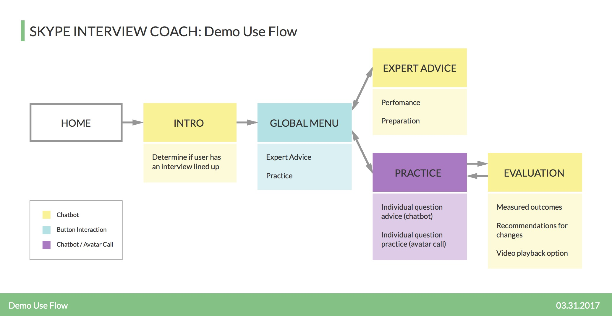

Planning and Discovery
I got started by working with the PM to put together a research plan that determined the timeline and expected business and user goals for the project.
Once the client gave us the ok to move forward, I jumped into market research. I found that:
– There are no viable competitors in the bot arena
– The job interview coaching websites/apps that do exist tend to only focus on generic interview questions and incorporate outdated, unsuccessful UI.
Understanding the overall market landscape and Skype’s desire to differentiate and innovate, I started to formulate a plan for user interviews – the most compelling aspect of the research for this project.
Collecting Insights... from Everyone
When working on designing for bots, user research takes on a different form than typical UX research. For this project, I tracked down and interviewed the following groups of people:
USERS - those who will potentially benefit from interview practice with the Skype bot.
HELPERS - those who we would model the bot on, people who help others prepare for job interviews at various levels in their career.
HIRING MANAGERS - those whose experience and advice would help inform the content and focus of the bot.
[“Practice interviewing out loud. Ideally with another person, but just saying it out loud really helps.” (Katie - H)] NEW STYLE!
By speaking to these three groups, we intended on determining (among many things):
– How we can best help prepare job candidates for interview success
– Where candidates tend to have pain points when preparing for interviews
– What hiring managers are looking for in an ideal candidate
The insights gathered from the research participants were invaluable for determining the structure of the conversational design and the content we ultimately provided for the bot. Following a successful presentation to the client, we moved on to design.
Structure and Ideation
For the design phase, I worked closely with our PM and content writer to determine use flows, information architecture and the conversational directions for the bot.

The high level use flow above was developed to communicate with the client on the overall direction for Build. Once approved, it gave us the structure necessary to begin incorporating content and building out more complicated, intricate flows.
At this point, I also began brainstorming directions for UI. After discussing the technical capabilities and limitations of the existing Skype UI with our developers, I created visual mockups to help illustrate the multimodal nature of the bot.
MOCKUPS
After these deliverables were approved, the team and I proceeded to flush out the personality/visual appearance of the avatar and more intricate use flows (see one here
[link to image]).
Iteration
“I think this is totally useful, it could be really helpful especially if you can incorporate technical questions.” -Sam, 36
The final step before Build was for me to conduct usability and bug testing to ensure the bot was running as smoothly as possible. With the UI, content and visual design in place, I encouraged participants to play around with the bot so I could establish pain points in the flows, note any confusing content and gather insights based on their experiences. The feedback I received helped us make some last minute content changes, but more importantly, reinforced that the bot was generally user friendly has a viable market.